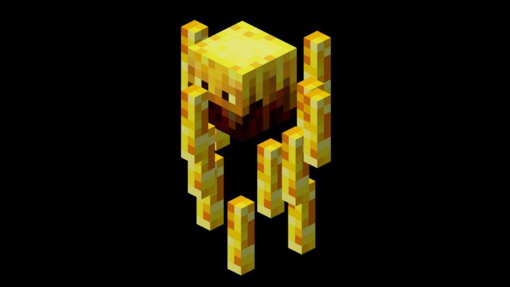

Sobre o Nether:
O Nether é uma dimensão infernal e perigosa cheia de lava, fogo, fortalezas e biomas únicos. Ele é acessado por um portal do Nether feito com obsidiana. Diferente do Overworld, o Nether possui regras físicas próprias, como o fogo eterno, e nenhum ciclo de dia e noite. É uma área crucia l para a progressão no jogo: aqui se encontra blaze rods, nether wart, e outros recursos essenciais para poções e para encontrar o End.
Mobs mais comuns no mundo Nether:
| Mobs | Nível de Dificuldade |
|---|---|
| Blaze | Médio |
| Wither Skeleton | Médio ou alta |
| Ghast | Médio |
| Magma Cube | Baixo a grande |
| Piglin | Médio |
| Strider | Baixo |
Mobs no Over World:
❮
❯

Solta bolas de fogo, essencial para poções

Espada, envenenamento "Wither"
Dispara bolas explosivas, flutua
Divide-se em cubos menores ao morrer

Hostil se você não usar ouro
Pode ser montado para andar na lava
Dicas para este mundo:
- Leve poções de resistência ao fogo — lava e mobs flamejantes são comuns.
- Não ataque Piglins ou Piglin Brutes — eles atacam em grupo e são letais.
- Ilumine áreas próximas ao seu portal para facilitar o retorno com segurança.
- Evite cavar para baixo — bolsões de lava podem surgir repentinamente.
- Use isqueiro reserva ou obsidiana extra, caso o portal seja danificado.